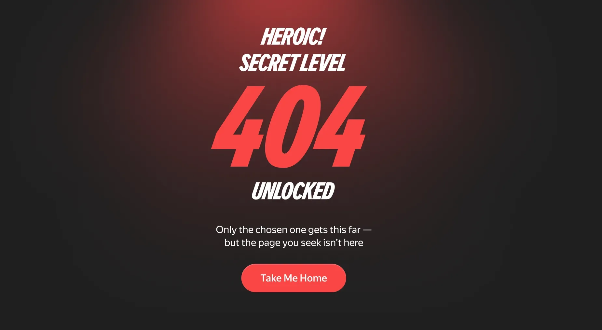
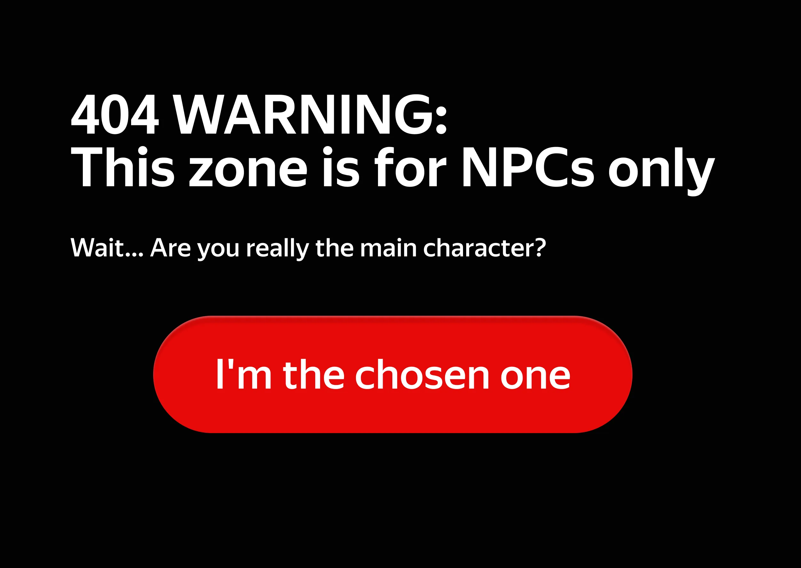
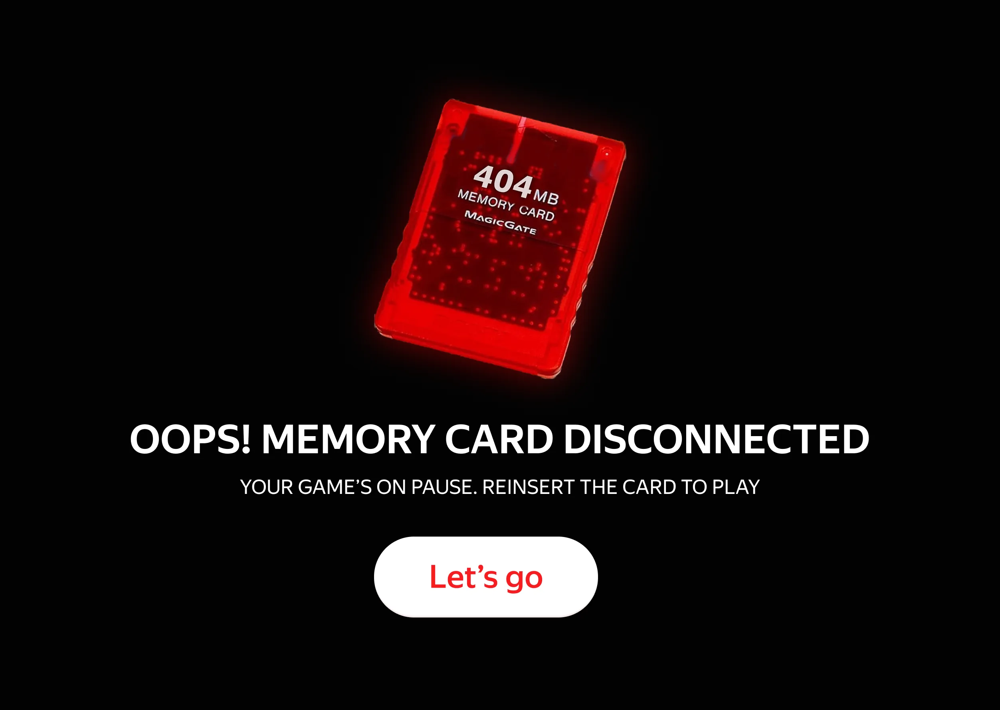
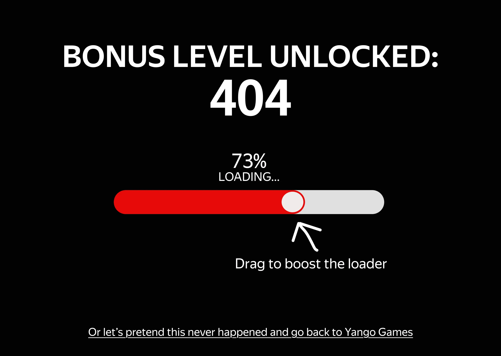
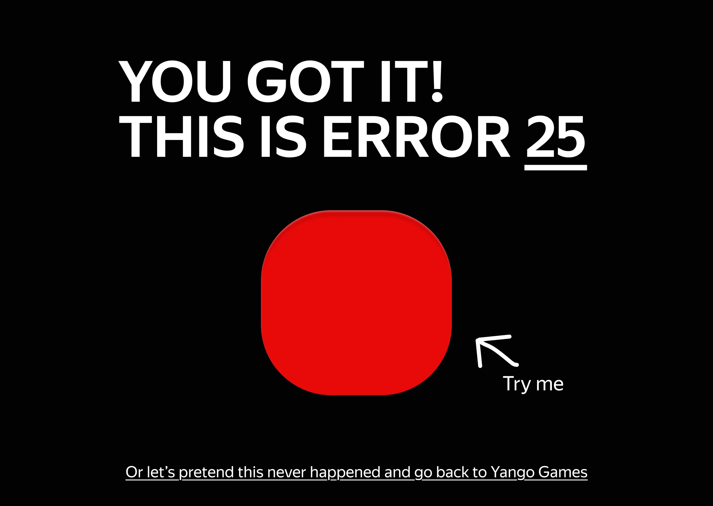

На мировом рынке сервис Яндекс Игры работает под брендом Yango Games
Если модераторы удаляют игру с платформы или переносят, пользователь попадает на страницу ошибки 404. Мы превратили её в интересную находку, чтобы удержать игрока
Задача
Придумать нешаблонную страницу 404, которая оставит пользователя на платформе
Что сделал
Представил, что 404 — это секретный уровень, который открывают только избранные. На странице мы поздравляем игрока и уводим на главный экран
Итоговая версия

404 — секретный уровень для избранныхКонцепции

Докажи, что не NPC: более дерзкая версия итогового варианта

Карта памяти: версия для тех, кто ностальгирует по играм на PS1

Вредный прогресс-бар: ползунок отскакивает назад каждый раз, когда вы пытаетесь подвинуть его к концу загрузки

Кликер: накликайте число 404, чтобы узнать код ошибки